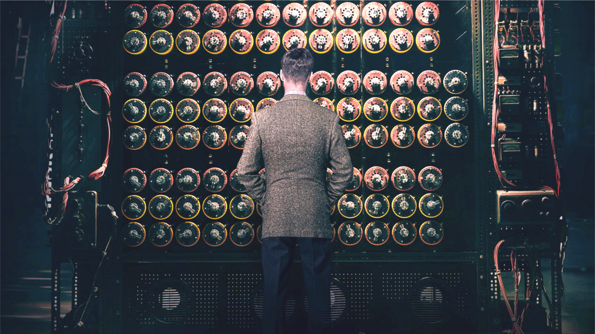
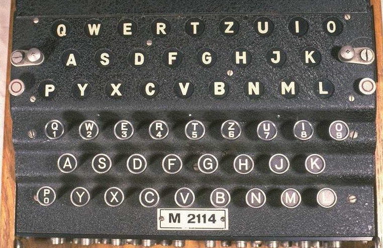

La máquina de Turing es un dispositivo conceptual diseñado por Alan Turing en 1936, que juega un papel fundamental en la teoría de la computación y sentó las bases de la ciencia de la computación moderna. La máquina de Turing es un modelo abstracto que describe cómo una máquina puede llevar a cabo cualquier cálculo al seguir una serie de reglas simples.
La idea principal detrás de la máquina de Turing es que consiste en una cinta infinita dividida en celdas, donde cada celda puede contener un símbolo de un alfabeto finito. La máquina puede leer y escribir en la cinta, moverse hacia la izquierda o hacia la derecha y cambiar de estado en función de la lectura del símbolo actual y de su estado interno.
La máquina de Turing opera siguiendo un conjunto de reglas deterministas que especifican cómo se debe comportar en cada estado. Estas reglas se definen mediante una tabla de transiciones, que indica qué símbolo debe escribir la máquina, a qué celda debe moverse y en qué estado debe pasar, en función del símbolo leído y el estado actual.
La máquina de Turing es capaz de simular cualquier algoritmo computacional, lo que significa que puede resolver cualquier problema que sea solucionable algorítmicamente. Esto se debe a su capacidad para manipular y almacenar información en la cinta, cambiar de estado y seguir instrucciones específicas.
El concepto de la máquina de Turing fue fundamental en la demostración de Turing de que ciertos problemas son indecidibles, es decir, no se pueden resolver mediante un algoritmo. También sentó las bases para la comprensión de la computabilidad y la complejidad computacional.
El diseño de la máquina de Turing influyó en el desarrollo posterior de las computadoras electrónicas, ya que proporcionó un modelo teórico para su funcionamiento. Muchos consideran a Alan Turing como uno de los padres de la informática y su máquina de Turing como un hito en la historia de la computación.

Criptografía y descifrado
Alan Turing hizo importantes contribuciones en el campo de la criptografía y el descifrado durante la Segunda Guerra Mundial. Su trabajo en Bletchley Park, en el Reino Unido, fue fundamental para el rompimiento del código Enigma utilizado por la Alemania nazi.
En ese momento, la máquina Enigma era una máquina de cifrado electromecánica utilizada por los militares alemanes para cifrar sus comunicaciones. El cifrado Enigma era extremadamente sofisticado y se consideraba prácticamente invulnerable. Sin embargo, Turing y su equipo de criptoanalistas trabajaron en el desarrollo de técnicas y métodos para descifrar los mensajes encriptados por la máquina Enigma.
Turing fue uno de los principales diseñadores de la "Bomba", una máquina electromecánica utilizada para automatizar el proceso de descifrado de los mensajes Enigma. La Bomba tenía como objetivo probar diferentes configuraciones de la máquina Enigma y encontrar las claves de cifrado utilizadas por los alemanes.
Además, Turing lideró el desarrollo del "banco de criptoanalistas" en Bletchley Park, donde se reunieron equipos de criptoanalistas para trabajar en el descifrado de las comunicaciones enemigas. Su enfoque se centró en el análisis estadístico y la utilización de técnicas de descifrado automatizado, lo que ayudó a acelerar el proceso de descifrado y permitió obtener información valiosa de los mensajes encriptados.
Las contribuciones de Turing y su equipo en el descifrado de los códigos Enigma tuvieron un impacto significativo en el resultado de la Segunda Guerra Mundial. Se estima que el trabajo de Bletchley Park ayudó a acortar la guerra en varios años, al permitir a los Aliados leer las comunicaciones enemigas y anticipar los movimientos de las fuerzas alemanas.
Es importante destacar que el trabajo de Turing en criptografía y descifrado fue clasificado y mantenido en secreto durante muchos años después de la guerra. Su contribución y la de su equipo fueron reconocidas mucho tiempo después, y se le atribuye a Turing haber sido un pionero en el campo de la criptografía y un precursor de la moderna seguridad informática.

Computabilidad
Alan Turing realizó contribuciones fundamentales en el campo de la computabilidad, sentando las bases teóricas de la ciencia de la computación moderna.
La noción de computabilidad se refiere a la capacidad de un problema para ser resuelto mediante un algoritmo o un proceso de cálculo. En la década de 1930, Turing desarrolló el concepto de "máquina de Turing" como un modelo teórico para definir la computabilidad y estudiar los límites de lo que puede ser computado.
La máquina de Turing, que mencioné anteriormente, es un dispositivo conceptual que opera en una cinta infinita dividida en celdas, donde cada celda puede contener un símbolo. Turing demostró que, en teoría, cualquier función que sea computable puede ser calculada por una máquina de Turing. Esta idea sentó las bases de la computación universal y el concepto de algoritmo.
Uno de los logros más destacados de Turing en el ámbito de la computabilidad fue su demostración de la existencia de problemas no resolubles o "indecidibles". En particular, en 1936, publicó un artículo titulado "On Computable Numbers, with an Application to the Entscheidungsproblem", donde abordó el Entscheidungsproblem (problema de la decisión), planteado por David Hilbert.
El Entscheidungsproblem se refería a la cuestión de si existe un algoritmo general para determinar la verdad o falsedad de cualquier afirmación matemática. Turing demostró que no hay un algoritmo que pueda resolver este problema para todas las afirmaciones matemáticas, lo que llevó a la idea de los problemas no resolubles.
Este resultado de Turing tuvo implicaciones profundas y estableció límites fundamentales en la computabilidad. Ayudó a definir el campo de la teoría de la computación y la teoría de la computabilidad, y sentó las bases para el desarrollo de la lógica computacional y la teoría de autómatas.
El concepto de computabilidad de Turing ha sido fundamental en la teoría de la computación y ha influido en la forma en que entendemos la capacidad y los límites de las máquinas y los sistemas computacionales. Su trabajo sentó las bases teóricas para el desarrollo posterior de la ciencia de la computación y sigue siendo relevante en la actualidad.
Legado
El legado de Alan Turing es extraordinariamente relevante en varios campos, incluyendo la ciencia de la computación, la inteligencia artificial, la criptografía y la lógica matemática. Su trabajo ha tenido un impacto duradero y su influencia se extiende a través de muchas áreas de estudio.